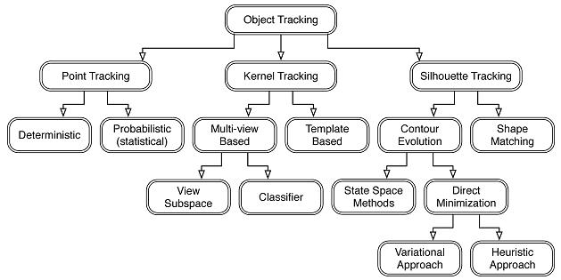
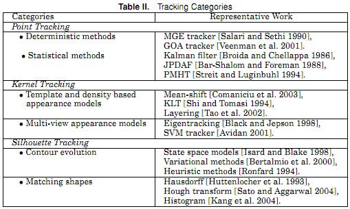

$$ 经过实验测试，仅依靠颜色特征进行目标物体跟踪存在诸多缺点，本文对此进行了改进，将目标颜色和形状特征相结合作为机器人目标跟踪决策控制的依据[1]
$D 在变化的背景中对运动目标进行跟踪，具有较大的复杂度[1]
目标跟踪的任务是获得目标在连续图像序列中位置随时间变化的轨迹。
目标的表达用的都是形状或外观模型。选择的表达模型限制了其可以使用的运动模型或分解方法。比如点表达的目标只能体现平移运动。几何形状表达仿射或投影更加合适。而对非刚性目标，轮廓表达最为合适，可用参数性和非参数型的模型描述其运动。
目标跟踪思路
四种目标跟踪算法：
三种跟踪算法分别是：点跟踪，核跟踪，轮廓跟踪。

图1 目标跟踪算法分类

图2 目标跟踪代表算法
跟踪算法的难点：
- 鲁棒性；
- 准确性；
- 快速性；
运动目标检测跟踪的复杂性表现在
- 光线变化。由于时间变化，一天的早晚，上午和下午，日光的照射强度和角度变化会引起光线变化；再由于天气原因，同样会导致照射光线的变化。由于光线的变化，要使一种检测算法适应各种光照情况是比较困难的。
- 场景中运动目标的干扰。比如，大面积区域中各种目标的运动，车辆的的突然停止与突然启动；场景中某些目标的频繁变动，比如，摇摆的树枝和树叶，水面的波动等。
- 初始化问题。在一些监视场景中，要得到无噪声干扰的纯背景图像(不含检测目标和运动背景目标的图像)是很困难的。比如，人车繁忙的交通场景。
- 遮挡与孔洞问题。要检测的运动目标，被背景中的目标所遮挡情况下，怎样判断遮挡。
- 阴影问题。在目标检测当中，如何将被检测目标与其产生的阴影区分开来，从而仅检测目标部分。
- 目标的失踪。运动目标长期停留在场景中，有可能变成背景目标。 由于目标检测的复杂性，想要建立一个通用的，适合所有情况的目标检测算法是不现实，也是不可能的。因此，根据具体情况，建立符合实际条件的目标检测算法是目标检测方法的研究方向。
[2] Realtime and Robust Hand Tracking from Depth - CVPR14_HandTracking.pdf
通过重新定义手的模型和能量方程，这个工作将手部跟踪做到了实时并且算法也很鲁棒。在PC上不用GPU也达到了25FPS（每秒显示帧数），而平均误差在测试数据上降低到10mm，相比其他方法提升50%左右。对手势的准确识别是现在很流行的一个问题。
如题，针对camshift跟踪容易丢失目标问题，加入了kalman滤波来预测下一个可能存在的位置，跟踪丢失的几率降低，当时也会有丢失的时候，这个就是看背景的反射投影跟跟踪的目标相近度有多高了。
Ps：其实camshift也不是说很容易丢失跟踪目标，这个在本人的测试来看，当你的摄像头采集的帧速很高的时候，基本也不会丢失，而当帧速低的时候就容易丢失了，本文改出来的算法就是当帧速不高的时候有那么点用，自己测试看看就知道了。我最高帧速在30+的时候就没得问题，15帧 or 更低的时候就有可能用上这个算法。
当然目标物动突然加速，（而且真的很快，有多快自己试），那么要不丢失还是很有难度的。
再则。有两个阀值是要手动选择的，可以看反射投影图看观察，当只有目标物的时候最佳，这个怎么自动做到目前没得什么好办法，调好这两个阀值对跟踪也有帮助的。
对于轻量级任务，Pixy是一种替代技术，可以让你打造一个机器人程序或者系统，通过感觉特定颜色，识别及跟踪物体。
该技术的创造者Charmed Labs及卡耐基梅隆大学表示，该技术的识别速度很快，因为它采用以颜色为中心的办法——使该产品只是将特定颜色的物体的视觉数据发送给相互配合的微型控制器，而不是输出所有视觉数据以进行图像处理。
wu-robotics lab: motion_capture
本文建立了基于机器视觉反馈的云台控制模型, 并通过相邻帧间的目标位置预测来简化搜索算法, 实现快速高效的视觉云台对运动目标的连续跟踪。在制定系统空间转角输入量的控制策略中, 简化了控制模型并对产生的偏差量进行了分析。结果表明, 简化后的控制算法能够实现快速反馈和像面调整, 在 25帧/秒时实现对运动目标稳健跟踪, 且跟踪精度高于传统算法; 在目标速度 2 m/s、相机 60帧/秒时, 改进算法实现了对运动目标的连续跟踪。同时提出了立体视觉系统模型及其在云台控制中的应用, 通过像面坐标获取空间位置信息以规避目标跟丢现象。
【摘要】：针对动目标跟踪普遍存在的跟踪精度不高及跟踪时间短的问题,设计了一种基于二自由度云台的新型的目标跟踪控制系统;该系统将采用TMS320DM642作为主控制器,利用STM32f417作为云台控制器,完成目标跟踪系统的硬件设计,并将跟踪、控制等算法移植到系统平台上,实现对动目标的主动协同跟踪;在复杂的户外背景下,对高速车辆进行跟踪特性测试;实验结果表明,在目标遇到遮挡或者形状改变、旋转情形下,该系统仍能稳定跟踪目标。
【作者单位】： 西安飞机工业(集团)航电科技工程公司;西北工业大学;
【关键词】： 二自由度云台 主动协同跟踪 云台控制
【基金】：航空科学基金(20080153002)
【分类号】：TP391.41
【正文快照】：0引言目标跟踪[1]是近年来计算机视觉领域中备受关注的研究方向,在安全监控、运动检测、航空航天等领域都具有十分重要的研究意义和广泛的实用价值。它融合了图像处理、模式识别、人工智能、自动控制及嵌入式系统等相关领域的先进技术与研究成果,是一种跨学科、多技术融合的
摘 要：本文提出了通过头部运动控制井下摄像头的方法。首先通过Kinect体感设备获取人体头部和肩部图像景深数据，并采用骨骼跟踪技术对其进行处理，建立各个关节的3D坐标；再根据3D坐标值计算出头部的摆动角度，控制系统根据用户需求将其转变为控制信号传送给井下云台控制器，从而实现井下摄像头旋转方向和角度的控制。试验表明，该方法能够有效地控制井下摄像头。
【关键词】 云台控制 人体头部 摄像头 运动控制 跟踪技术 摆动角度 信号传送 用户需求
【出 处】 《内江科技》2013年 第11期 74-75页 共2页
【收 录】 中文科技期刊数据库
【摘要】：首先利用微软Kinect的图像传感器获得RGB图像,并且利用CamShift算法实时跟踪一个选中的目标物体,然后获得该目标物体的质心,最后将该质心映射到Kinect深度传感器获得的深度图像中,从而实时得到该运动目标质心的三维坐标.实验结果表明,在目标与背景的色彩空间有一定偏差的情况下,该方法能够实时跟踪目标物体并获得目标物体质心的三维坐标.
【作者单位】： 西南大学计算机与信息科学学院;
【关键词】： Kinect 运动目标跟踪 三维坐标
【基金】：家蚕基因组生物学国家重点实验室开放课题研究基金
【分类号】：TP391.41
【正文快照】：目前,运动目标的跟踪是计算机视觉领域的一个研究热点,在安全监控、手势识别、智能交通以及未知环境下移动机器人的视觉导航等领域都有非常广阔的应用前景.针对这些不同的应用领域,研究者提出了众多的运动目标跟踪算法,总体上可以分为以下几种:基于区域的跟踪、基于特征的跟
OpenCV自带例子中的camShift算法，可以分为三个部分：（引用自这里 http://www.cnblogs.com/tornadomeet/archive/2012/03/15/2398769.html）
一、计算色彩投影图（反向投影）：
为了减少光照变化对目标跟踪的影响，首先将图像从RGB颜色空间转换到HSV颜色空间；
对H分量进行直方图统计，直方图代表了不同H分量取值出现的概率，或者说可以据此查找出H分量的大小为x时的概率或像素个数，即，得到颜色概率查找表；
将图像中每个像素的值用其颜色出现的概率进行替换，由此得到颜色概率分布图；
以上三个步骤称之为反向投影，需要提醒的是，颜色概率分布图是一个灰度图像；
二、meanShift寻优
前面提到过meanShift算法（http://blog.csdn.net/carson2005/article/details/7337432）是一种非参数概率密度估计方法，它通过不断迭代计算得到最优搜索窗口的位置和大小。
meanshift算法是一种密度函数梯度估计的非参数方法，通过迭代寻优找到概率分布的极值来定位目标。 算法过程为： (1).在颜色概率分布图中选取搜索窗W (2).计算零阶距：
计算一阶距：
计算搜索窗的质心：
(3).调整搜索窗大小 宽度为；长度为1.2s； (4).移动搜索窗的中心到质心，如果移动距离大于预设的固定阈值，则重复2)3)4)，直到搜索窗的中心与质心间的移动距离小于预设的固定阈值，或者循环运算的次数达到某一最大值，停止计算。关于meanshift的收敛性证明可以google相关文献。
三、camShift跟踪算法
前面提到，camShift其实就是在视频序列的每一帧当中都运用meanShift，并将上一帧的meanShift结果作为下一帧的初始值，如此不断循环迭代，就可以实现目标的跟踪了。
camshift是MeanShift算法的改进，称为连续自适应的MeanShift算法，CamShift算法的全称是"Continuously Adaptive Mean-SHIFT"，它的基本思想是视频图像的所有帧作MeanShift运算，并将上一帧的结果（即Search Window的中心和大小）作为下一帧MeanShift算法的Search Window的初始值，如此迭代下去。
Camshift 关键就在于当目标的大小发生改变的时候，此算法可以自适应调整目标区域继续跟踪。
camshift能有效解决目标变形和遮挡的问题，对系统资源要求不高，时间复杂度低，在简单背景下能够取得良好的跟踪效果。但当背景较为复杂，或者有许多与目标颜色相似像素干扰的情况下，会导致跟踪失败。因为它单纯的考虑颜色直方图，忽略了目标的空间分布特性，所以这种情况下需加入对跟踪目标的预测算法。